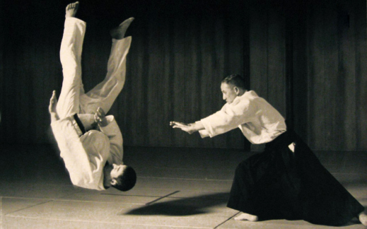

Годзо Шиода, вице-президент Международной Федерации Боевых Искусств,
выдающийся мастер боевых искусств, автор, учитель и основатель школы
Айкидо Йошинкан умер в Токио, в воскресенье 17-го июля 1994 года, после
продолжительной болезни. Ему было 78 лет и у него осталась жена Нобуко,
и три сына, Тетсутаро, Такахиса и Ясухиса. Его автобиография, опубликованная
в 1985 году, обобщает его взгляд на жизнь в своем заголовке — «Айкидо Джинсей»
– «Айкидо – моя жизнь». Свою жизнь Шиода посвятил изучению и распространению
Айкидо, которому его обучил основатель этого современного боевого искусства
Морихеи Уэсиба. Гозо Шиода родился в Шинджуку, Токио в 1915 году. Его отец Сеиичи
Шиода был выдающимся педиатром, академиком медицинских наук, который интересовался
боевыми искусствами и построил доджо, известное как Йошинкан, в своём доме в
Йотсуйа, Токио. В этот зал приглашались проводить демонстрации и уроки различные
учителя, и молодой Гозо вскоре был увлечен недавно появившимся дзюдо. Он начал
заниматься с энтузиазмом, проявляя решимость и энергию, которые были характерны
для всего, чем он занимался. Обладая природным талантом, он быстро прогрессировал
и вскоре был обладателем третьего дана. В подростковом возрасте он любил
испытывать свои способности, вызывая на поединок полицейских инструкторов дзюдо.
Поворотный момент в его жизни наступил в возрасте 17-ти лет, когда отец послал его
понаблюдать за занятиями, которые проводил Морихеи Уэсиба в своем доджо Кобукан в
нескольких милях от Ушигоме. Школа Уэсибы была в то время достаточно закрытой, и
для обучения в ней было необходимо предоставить поручителей, гарантирующих
добропорядочность ученика и быть готовым выдержать атмосферу строгой дисциплины.
Во время первого своего визита, увидев как легко, без видимых усилий Уэсиба
бросает своих партнеров, Шиода был уверен, что стал свидетелем обмана, но
был приглашен испытать свое дзюдо против искусства Уэсибы. Он атаковал и обнаружил
себя летящим по воздуху, и ударился головой об пол, не успев понять, что же
произошло. Это сразу убедило его в реальности происходящего, и на следующий день,
24-го мая 1932 года, он начал свои занятия в Кобукан Доджо в качестве учи-деши,
то есть ученика, живущего при доджо. Шиода тренировался под руководством Морихеи
Уэсибы до 1941 года, когда он окончил обучение в университете Такушоку. В этом же
году он женился на Нобуко. Годы войны он провел занимая административную должность
в Китае, на Тайване, Селебесе и Борнео, и вернулся в Японию в мае 1946 года. После
непродолжительного времени, проведенного в резиденции Уэсибы на Иваме, восстановив
свои силы после лишений военного времени, Шиода вернулся в Токио где работал в
компании Нихон Кокан Стил. В 1952 году ему предложили преподавать Айкидо
сотрудникам компании. Вслед за снятием запрета на занятия боевыми искусствами,
который был установлен правительством МакАртура, Ниппон Сого Будо Иайтай
(Ассоциация продления Жизни) спонсировала первую послевоенную демонстрацию
Айкидо в 1954 году. Шиода получил Гран При за лучшее исполнение, выступая
перед 15-ти тысячной аудиторией. Он привлек внимание некоторых выдающихся
бизнесменов, которые предложили ему открыть собственное доджо. Так появилась
школа Йошинкан, позаимствовавшая свое имя у доджо его отца. Еще со времени
своих ранних занятий дзюдо, Гозо Шиода поддерживал тесные контакты с
инструкторами боевых искусств, работавших в полиции. В 50-е годы он путешествовал
по Японии, демонстрируя эффективность Айкидо местным отделениям полиции.
Постепенно он начал проводить специальные занятия для полиции, включая
обязательные занятия Айкидо Йошинкан для женского подразделения полиции Токио и
ежегодных тренировок элитного спецподразделения Кидотай, инструкторы которого
стали инструкторами в штабквартире Йошинкан. Курс для спецназа полиции существует
уже 30 лет. В 1990 году Гозо Шиода организовал другой курс, на этот раз для
занимающихся Айкидо Йошинкан со всего мира, желающих стать инструкторами.
Мастерство Шиоды был подтверждено в 1961 году, когда Морихеи Уэсиба присвоил
ему 9-й дан. Выдающийся вклад Шиоды в развитие японских боевых искусств и в
частности Айкидо был признан Международной Федерацией Боевых Искусств, которая
в 1984 году присвоила ему почетный 10-ый дан и титул Мейджин – Великий Мастер.
За сорок лет своего существования организация Йошинкан распространилась по всей
Японии, обеим Америкам, Европе, Австралии, Новой Зеландии и Юго-Восточной Азии.
Репутация Гозо Шиоды, которого журнал «Black Belt» назвал «маленький гигант Айкидо»,
привлекала большое количество высокопоставленных посетителей, желающих увидеть, как
миниатюрный Шиода справляется с соперниками в три раза младше и порою более чем в два
раза тяжелее себя. Зрителями на демонстрациях Гозо Шиоды были члены японской и британской
королевских фамилий, включая крон-принца Хирономийа, а также в 1962 году Роберт Кеннеди.
Ближе к концу жизни Гозо Шиода провел много времени в поездках по разным странам для того,
чтобы демонстрировать на практике свое видение Айкидо как средства развития отношений между
различными культурами. В 1990 году он основал Международную Федерацию Айкидо Йошинкан,
призванную способствовать развитию растущего интереса к Айкидо Йошинкан во всем мире.
Он был убежден, что с помощью языка Айкидо различия между народами и культурами
действительно уступят место миру и гармонии в отношениях между людьми. Айкидо Йошинкан
делает акцент на изучении базовых движений и приемов, а также проникновению философских
идей в ежедневную жизнь и отношения. Айкидо Йошинкан – это несоревновательное и
ненасильственное боевое искусство. Сотрудничество и гармония более важны чем агрессивность.
Правильный выбор времени для исполнения приема и контроль более важны чем сила. Обучая
базовым приемам, Айкидо Йошинкан обеспечивает средство самозащиты без излишней агрессии.
Ёсинкан айкидо
Hinshitsukan dojo
Качество превыше всего!
Вы можете записать на занятия прямо сейчас, для этого, заполните, пожалуйста, форму:
Ёсинкан айкидо
Hinshitsukan dojo
Качество превыше всего!
Вы можете записать на занятия прямо сейчас, для этого, заполните, пожалуйста, форму: